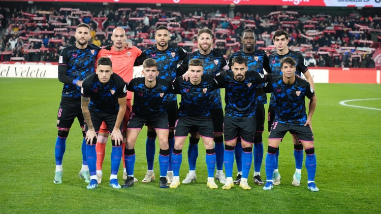
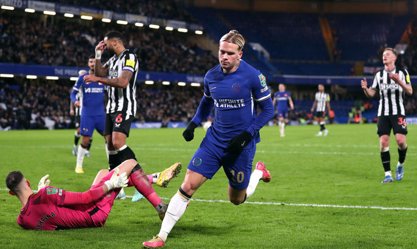
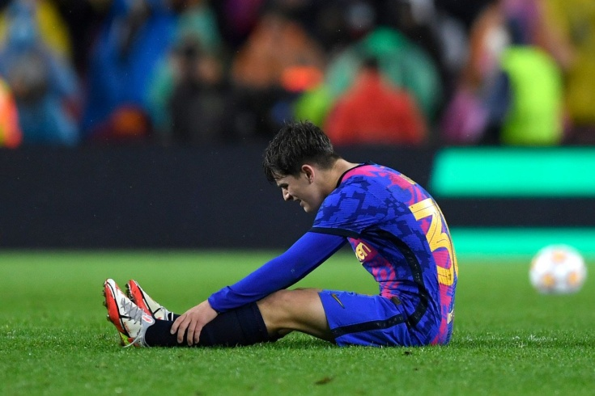
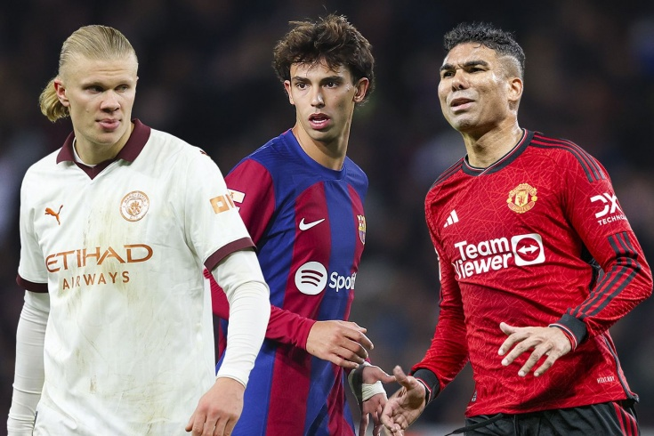

The draw of the LCH presented several cool confrontations. Zakharyan will play against Mbappe!
The grandees were very lucky. But what if a miracle happens?
Today, on December 18, the draw for the 1/8 finals of the Champions League took place at the UEFA headquarters in Nyon - the best 16 teams recognized their rivals.
The pairs turned out to be interesting: Copenhagen was unlucky to get to Manchester City, and Arsen Zakharyan will have to fight against Kylian Mbappe. It is also worth noting the meeting of the champions of Italy and Spain – Napoli and Barcelona.
Latest News
|

The Club World Cup. Manchester City scored three Urawa Red goals and reached the final And without Goland, De Bruyne and Doku, Pep Guardiola's team was able to score three goals against Urawa Red. It all started with an autogall at the end of the first half. |

The feat of Mudrik a in the League Cup, the injury of Tsygankov, the shame of Napoli. Main news for December 19th Mudrik led Chelsea to the semi-finals of the League Cup Mikhail came on as a substitute and equalized in the.... |

The Spanish La Liga canceled the deal of the footballer Gavi, who plays at Barcelona In the last season, a new star by the name of Gav I shone with new colors in the Catalan team. The guy was only 18 years old, but in his debut 37 matches.... |

The main transfer news of the week. Real Madrid has chosen the main goal, and MU is fusing ballast Barcelona is ready to buy out two stars, but risks losing a top defender. |